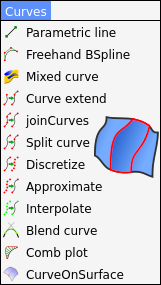

mhalil
mhalil
3D Modelleme, Animasyon, Render, Vektör - Raster Grafik İşleme ve Python ile Programlama konularına meraklı Açık Kaynak Hayranı bir Makine Mühendisi
3D Modelleme, Animasyon, Render, Vektör - Raster Grafik İşleme ve Python ile Programlama konularına meraklı Açık Kaynak Hayranı bir Makine Mühendisi

Bu bölümde, FreeCAD içerisinde Komut Dosyası Oluşturma (Scripting) konusu ve Bazı Çalışma Tezgahlarına (Curves Workbench [Eğriler Çalışma Tezgahı]) ait komutların ne işe yaradığını ve nasıl kullanılacağını öğreneceğiz.

FreeCAD içerisinde Komut Dosyası Oluşturma (Scripting) Konusunu öğrenmeye çalışıyor ve Türkçe içerikli Kaynak oluşturmayı hedefliyorum. Bu bölümde İlk etapta Python programlama dili hakkında kısa bir bilgi verecek ardından betik (komut dosyası) yazma konusundan devam edeceğim.
Scripting Eğitim sayfasına gitmek için tıklayın...

Curves Workbench (Eğriler Çalışma Tezgahı), NURBS eğrileri ve yüzeyleri için bir araç koleksiyonuna dayalı python tabanlı harici bir çalışma tezgahıdır. Bu çalışma tezgahı FreeCAD Master ve OCC 7.4 ile geliştirilmiştir. Bu Çalışma tezgahı ile Yüzey modelleme konusunda ihtiyacımızı karşılayan pek çok faydalı komut kullanımımıza sunulmuştur. Bu bölümde Eğriler (Curves) menüsüne ait komutların detayları incelenmektedir.
CURVES Menüsü komutlarının anlatıldığı sayfaya gitmek için tıklayın...

Eğriler Çalışma Tezgahı (Curves Workbench) ile Yüzey modelleme konusunda ihtiyacımızı karşılayan pek çok faydalı komut kullanımımıza sunulmuştur. Bu bölümde Yüzeyler (Surfaces) menüsüne ait komutların detayları incelenmektedir.
SURFACES Menüsü komutlarının anlatıldığı sayfaya gitmek için tıklayın...

Silk ÇalışmaTezgahı (WorkBench) Nedir? Silk ÇalışmaTezgahı (WorkBench), FreeCAD'de NURBS yüzeyleri oluşturan bir Harici çalışma tezgahıdır. Silk WB, NURBS Düşük derece ve dikiş sürekliliğine odaklanan, tasarım ve mühendislik için yüksek kaliteli ve düşük ağırlıklı yüzey modelleme araçları barındırır.
Silk ÇalışmaTezgahı komutlarının anlatıldığı sayfaya gitmek için tıklayın...
Last updated: Paz 11 Şubat 2024